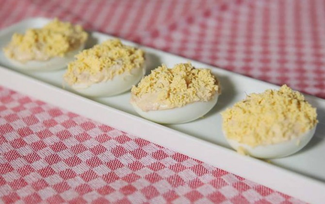

Huevo cocido con mayonesa

Descripción:
Otra receta rápida con huevos
Ingredientes:
- Huevos
- Salsa mayonesa
- Atún en lata
Preparación:
- Pon agua en un cazo y espera a que hierva.
- Echa el huevo en el agua hirviendo y espera al menos 15 min.
- Casca el huevo, córtalo en dos y extrae las yemas
- Mezcla las yemas con el atún, ya desmigado, y con la mayonesa
- Rellena las claras con la mezcla obtenida... et voilà!